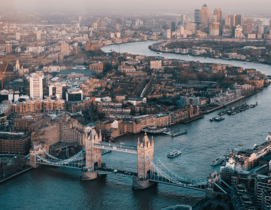

The Maasai Mara is the heart of Kenya’s safari country, famed for dramatic predator sightings, wide-open savannahs and world-class wildlife viewing. The annual Great Migration brings millions of wildebeest and zebra through the reserve.
Choose a trusted safari operator like Rasset Adventures to access top camps and expert guides who know the Mara’s rhythms.